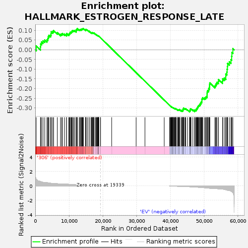

| | | Dataset | 306_EV_express.306_EV.cls#306_versus_EV |
| Phenotype | 306_EV.cls#306_versus_EV |
| Upregulated in class | EV |
| GeneSet | HALLMARK_ESTROGEN_RESPONSE_LATE |
| Enrichment Score (ES) | -0.32043764 |
| Normalized Enrichment Score (NES) | -1.0394199 |
| Nominal p-value | 0.33275563 |
| FDR q-value | 0.77794355 |
| FWER p-Value | 1.0 |
Table: GSEA Results Summary

Fig 1: Enrichment plot: HALLMARK_ESTROGEN_RESPONSE_LATE
Profile of the Running ES Score & Positions of GeneSet Members on the Rank Ordered List
| SYMBOL | TITLE | RANK IN GENE LIST | RANK METRIC SCORE | RUNNING ES | CORE ENRICHMENT | | 1 | CPE | NNN | 291 | 0.920 | 0.0198 | No |
| 2 | SLC1A4 | NNN | 1538 | 0.605 | 0.0149 | No |
| 3 | DHRS2 | NNN | 1595 | 0.596 | 0.0300 | No |
| 4 | EGR3 | NNN | 1888 | 0.548 | 0.0398 | No |
| 5 | KCNK5 | NNN | 2316 | 0.502 | 0.0460 | No |
| 6 | OPN3 | NNN | 2819 | 0.473 | 0.0502 | No |
| 7 | DUSP2 | NNN | 3475 | 0.452 | 0.0512 | No |
| 8 | HSPA4L | NNN | 3717 | 0.429 | 0.0586 | No |
| 9 | ASS1 | NNN | 3843 | 0.419 | 0.0678 | No |
| 10 | FOS | NNN | 4077 | 0.398 | 0.0745 | No |
| 11 | NAB2 | NNN | 4568 | 0.366 | 0.0761 | No |
| 12 | FRK | NNN | 4689 | 0.363 | 0.0838 | No |
| 13 | LTF | NNN | 4718 | 0.360 | 0.0930 | No |
| 14 | BCL2 | NNN | 5184 | 0.342 | 0.0943 | No |
| 15 | S100A9 | NNN | 5433 | 0.328 | 0.0989 | No |
| 16 | ACOX2 | NNN | 6525 | 0.302 | 0.0884 | No |
| 17 | NPY1R | NNN | 7476 | 0.274 | 0.0796 | No |
| 18 | IGSF1 | NNN | 7809 | 0.274 | 0.0814 | No |
| 19 | CXCL12 | NNN | 8094 | 0.274 | 0.0839 | No |
| 20 | TFPI2 | NNN | 8708 | 0.274 | 0.0808 | No |
| 21 | PDLIM3 | NNN | 9284 | 0.250 | 0.0777 | No |
| 22 | TJP3 | NNN | 9309 | 0.248 | 0.0840 | No |
| 23 | BTG3 | NNN | 9930 | 0.224 | 0.0795 | No |
| 24 | DNAJC1 | NNN | 10084 | 0.219 | 0.0828 | No |
| 25 | HSPB8 | NNN | 10255 | 0.214 | 0.0856 | No |
| 26 | SLC2A8 | NNN | 10320 | 0.211 | 0.0902 | No |
| 27 | AFF1 | NNN | 10600 | 0.199 | 0.0908 | No |
| 28 | NRIP1 | NNN | 10784 | 0.194 | 0.0930 | No |
| 29 | JAK2 | NNN | 10927 | 0.190 | 0.0956 | No |
| 30 | DNAJC12 | NNN | 10993 | 0.188 | 0.0996 | No |
| 31 | SGK1 | NNN | 11355 | 0.181 | 0.0983 | No |
| 32 | CACNA2D2 | NNN | 11585 | 0.173 | 0.0991 | No |
| 33 | DCXR | NNN | 12073 | 0.158 | 0.0950 | No |
| 34 | MOCS2 | NNN | 12087 | 0.157 | 0.0990 | No |
| 35 | ABCA3 | NNN | 12117 | 0.156 | 0.1028 | No |
| 36 | CELSR2 | NNN | 12337 | 0.150 | 0.1031 | No |
| 37 | FKBP4 | NNN | 12426 | 0.147 | 0.1055 | No |
| 38 | METTL3 | NNN | 12446 | 0.146 | 0.1091 | No |
| 39 | SLC22A5 | NNN | 13025 | 0.133 | 0.1029 | No |
| 40 | SERPINA3 | NNN | 13245 | 0.126 | 0.1025 | No |
| 41 | CA12 | NNN | 13331 | 0.124 | 0.1044 | No |
| 42 | KLF4 | NNN | 13595 | 0.118 | 0.1031 | No |
| 43 | XBP1 | NNN | 13635 | 0.117 | 0.1056 | No |
| 44 | MAPT | NNN | 13830 | 0.112 | 0.1053 | No |
| 45 | ADD3 | NNN | 13922 | 0.110 | 0.1067 | No |
| 46 | FGFR3 | NNN | 14026 | 0.107 | 0.1078 | No |
| 47 | UNC13B | NNN | 14184 | 0.104 | 0.1079 | No |
| 48 | FARP1 | NNN | 14240 | 0.102 | 0.1097 | No |
| 49 | PDZK1 | NNN | 14903 | 0.087 | 0.1008 | No |
| 50 | PLK4 | NNN | 14934 | 0.087 | 0.1026 | No |
| 51 | SLC7A5 | NNN | 14953 | 0.086 | 0.1046 | No |
| 52 | JAK1 | NNN | 15055 | 0.084 | 0.1052 | No |
| 53 | SLC26A2 | NNN | 15443 | 0.079 | 0.1007 | No |
| 54 | FOXC1 | NNN | 15923 | 0.069 | 0.0944 | No |
| 55 | SULT2B1 | NNN | 15964 | 0.068 | 0.0956 | No |
| 56 | IL6ST | NNN | 16468 | 0.062 | 0.0887 | No |
| 57 | SCUBE2 | NNN | 16731 | 0.057 | 0.0857 | No |
| 58 | HR | NNN | 16754 | 0.056 | 0.0868 | No |
| 59 | TOP2A | NNN | 16772 | 0.056 | 0.0881 | No |
| 60 | PRKAR2B | NNN | 16867 | 0.053 | 0.0879 | No |
| 61 | DLG5 | NNN | 16998 | 0.050 | 0.0870 | No |
| 62 | MAPK13 | NNN | 17182 | 0.046 | 0.0852 | No |
| 63 | ARL3 | NNN | 17215 | 0.046 | 0.0859 | No |
| 64 | NCOR2 | NNN | 17240 | 0.045 | 0.0867 | No |
| 65 | MYB | NNN | 17287 | 0.044 | 0.0871 | No |
| 66 | PDCD4 | NNN | 17444 | 0.041 | 0.0855 | No |
| 67 | OVOL2 | NNN | 17865 | 0.033 | 0.0792 | No |
| 68 | RPS6KA2 | NNN | 18029 | 0.030 | 0.0773 | No |
| 69 | IL17RB | NNN | 18047 | 0.030 | 0.0778 | No |
| 70 | RBBP8 | NNN | 18224 | 0.026 | 0.0755 | No |
| 71 | CHPT1 | NNN | 18363 | 0.023 | 0.0737 | No |
| 72 | TIAM1 | NNN | 18447 | 0.021 | 0.0729 | No |
| 73 | FKBP5 | NNN | 18503 | 0.020 | 0.0725 | No |
| 74 | SERPINA1 | NNN | 18612 | 0.018 | 0.0711 | No |
| 75 | SNX10 | NNN | 18688 | 0.016 | 0.0703 | No |
| 76 | IGFBP4 | NNN | 18699 | 0.016 | 0.0705 | No |
| 77 | KRT13 | NNN | 18726 | 0.015 | 0.0705 | No |
| 78 | ELOVL5 | NNN | 18744 | 0.015 | 0.0706 | No |
| 79 | WFS1 | NNN | 18763 | 0.014 | 0.0707 | No |
| 80 | TST | NNN | 18805 | 0.013 | 0.0703 | No |
| 81 | TFF3 | NNN | 19309 | 0.001 | 0.0618 | No |
| 82 | DYNLT3 | NNN | 19313 | 0.001 | 0.0618 | No |
| 83 | HMGCS2 | NNN | 22611 | 0.000 | 0.0056 | No |
| 84 | ASCL1 | NNN | 29845 | 0.000 | -0.1178 | No |
| 85 | CHST8 | NNN | 32458 | 0.000 | -0.1623 | No |
| 86 | SOX3 | NNN | 38160 | 0.000 | -0.2596 | No |
| 87 | MICB | NNN | 39793 | -0.002 | -0.2874 | No |
| 88 | CD9 | NNN | 39794 | -0.002 | -0.2873 | No |
| 89 | PLXNB1 | NNN | 40018 | -0.008 | -0.2909 | No |
| 90 | MEST | NNN | 40099 | -0.010 | -0.2920 | No |
| 91 | GPER1 | NNN | 40233 | -0.013 | -0.2939 | No |
| 92 | TSPAN13 | NNN | 40288 | -0.014 | -0.2944 | No |
| 93 | HOMER2 | NNN | 40418 | -0.017 | -0.2962 | No |
| 94 | ZFP36 | NNN | 40522 | -0.020 | -0.2974 | No |
| 95 | CA2 | NNN | 40526 | -0.020 | -0.2969 | No |
| 96 | SIAH2 | NNN | 40556 | -0.020 | -0.2969 | No |
| 97 | SCARB1 | NNN | 40600 | -0.021 | -0.2970 | No |
| 98 | DHCR7 | NNN | 40769 | -0.025 | -0.2992 | No |
| 99 | AREG | NNN | 40837 | -0.026 | -0.2997 | No |
| 100 | CKB | NNN | 40903 | -0.027 | -0.3000 | No |
| 101 | COX6C | NNN | 40929 | -0.028 | -0.2997 | No |
| 102 | EMP2 | NNN | 41152 | -0.033 | -0.3026 | No |
| 103 | UGDH | NNN | 41247 | -0.035 | -0.3033 | No |
| 104 | RABEP1 | NNN | 41381 | -0.037 | -0.3046 | No |
| 105 | TPBG | NNN | 41476 | -0.039 | -0.3051 | No |
| 106 | ID2 | NNN | 41481 | -0.039 | -0.3041 | No |
| 107 | ITPK1 | NNN | 41539 | -0.040 | -0.3040 | No |
| 108 | ST14 | NNN | 41579 | -0.041 | -0.3036 | No |
| 109 | XRCC3 | NNN | 41877 | -0.047 | -0.3074 | No |
| 110 | GAL | NNN | 42183 | -0.054 | -0.3111 | No |
| 111 | TFAP2C | NNN | 42281 | -0.056 | -0.3113 | No |
| 112 | BAG1 | NNN | 42295 | -0.056 | -0.3100 | No |
| 113 | GALE | NNN | 42380 | -0.058 | -0.3098 | No |
| 114 | TOB1 | NNN | 42556 | -0.062 | -0.3112 | No |
| 115 | IMPA2 | NNN | 42587 | -0.063 | -0.3100 | No |
| 116 | LLGL2 | NNN | 42672 | -0.064 | -0.3097 | No |
| 117 | SORD | NNN | 42704 | -0.065 | -0.3085 | No |
| 118 | GINS2 | NNN | 43162 | -0.075 | -0.3143 | No |
| 119 | ABHD2 | NNN | 43209 | -0.076 | -0.3130 | No |
| 120 | PLAC1 | NNN | 43447 | -0.081 | -0.3149 | No |
| 121 | ETFB | NNN | 43620 | -0.085 | -0.3155 | No |
| 122 | SLC9A3R1 | NNN | 43664 | -0.086 | -0.3139 | No |
| 123 | LSR | NNN | 43710 | -0.087 | -0.3123 | No |
| 124 | ALDH3A2 | NNN | 43711 | -0.087 | -0.3100 | No |
| 125 | NMU | NNN | 43746 | -0.088 | -0.3082 | No |
| 126 | ALDH3B1 | NNN | 43800 | -0.090 | -0.3067 | No |
| 127 | GLA | NNN | 43806 | -0.090 | -0.3043 | No |
| 128 | STIL | NNN | 43860 | -0.091 | -0.3028 | No |
| 129 | CDH1 | NNN | 43893 | -0.092 | -0.3009 | No |
| 130 | PGR | NNN | 44251 | -0.092 | -0.3045 | No |
| 131 | CYP4F11 | NNN | 44434 | -0.092 | -0.3051 | No |
| 132 | PKP3 | NNN | 44515 | -0.093 | -0.3040 | No |
| 133 | RNASEH2A | NNN | 45047 | -0.106 | -0.3102 | No |
| 134 | SEMA3B | NNN | 45650 | -0.118 | -0.3173 | Yes |
| 135 | PCP4 | NNN | 45754 | -0.120 | -0.3158 | Yes |
| 136 | OLFM1 | NNN | 45794 | -0.121 | -0.3132 | Yes |
| 137 | CISH | NNN | 45848 | -0.122 | -0.3108 | Yes |
| 138 | PERP | NNN | 45889 | -0.123 | -0.3082 | Yes |
| 139 | PTPN6 | NNN | 45932 | -0.124 | -0.3056 | Yes |
| 140 | AMFR | NNN | 46091 | -0.128 | -0.3048 | Yes |
| 141 | FAM102A | NNN | 46623 | -0.142 | -0.3100 | Yes |
| 142 | SLC16A1 | NNN | 47136 | -0.155 | -0.3146 | Yes |
| 143 | SCNN1A | NNN | 47153 | -0.156 | -0.3107 | Yes |
| 144 | IDH2 | NNN | 47444 | -0.165 | -0.3112 | Yes |
| 145 | AGR2 | NNN | 47647 | -0.171 | -0.3100 | Yes |
| 146 | NXT1 | NNN | 47678 | -0.172 | -0.3059 | Yes |
| 147 | TMPRSS3 | NNN | 47837 | -0.177 | -0.3038 | Yes |
| 148 | TPD52L1 | NNN | 47896 | -0.179 | -0.3000 | Yes |
| 149 | TRIM29 | NNN | 48048 | -0.183 | -0.2976 | Yes |
| 150 | CDC6 | NNN | 48114 | -0.186 | -0.2937 | Yes |
| 151 | SFN | NNN | 48230 | -0.188 | -0.2906 | Yes |
| 152 | MDK | NNN | 48380 | -0.195 | -0.2879 | Yes |
| 153 | RAB31 | NNN | 48547 | -0.201 | -0.2853 | Yes |
| 154 | ANXA9 | NNN | 48742 | -0.208 | -0.2830 | Yes |
| 155 | HPRT1 | NNN | 48771 | -0.209 | -0.2779 | Yes |
| 156 | SLC29A1 | NNN | 48999 | -0.220 | -0.2758 | Yes |
| 157 | ISG20 | NNN | 49029 | -0.221 | -0.2703 | Yes |
| 158 | PRLR | NNN | 49264 | -0.230 | -0.2681 | Yes |
| 159 | KIF20A | NNN | 49302 | -0.232 | -0.2625 | Yes |
| 160 | FABP5 | NNN | 49304 | -0.232 | -0.2563 | Yes |
| 161 | FDFT1 | NNN | 49406 | -0.235 | -0.2516 | Yes |
| 162 | CALCR | NNN | 49546 | -0.237 | -0.2476 | Yes |
| 163 | MYOF | NNN | 50041 | -0.252 | -0.2493 | Yes |
| 164 | TPSAB1 | NNN | 50359 | -0.267 | -0.2475 | Yes |
| 165 | BLVRB | NNN | 50498 | -0.275 | -0.2425 | Yes |
| 166 | RAPGEFL1 | NNN | 50790 | -0.288 | -0.2397 | Yes |
| 167 | CDC20 | NNN | 50843 | -0.291 | -0.2327 | Yes |
| 168 | KRT19 | NNN | 50847 | -0.291 | -0.2249 | Yes |
| 169 | PPIF | NNN | 50878 | -0.293 | -0.2176 | Yes |
| 170 | CYP26B1 | NNN | 50960 | -0.297 | -0.2109 | Yes |
| 171 | PTGES | NNN | 51304 | -0.308 | -0.2085 | Yes |
| 172 | SLC27A2 | NNN | 51344 | -0.311 | -0.2008 | Yes |
| 173 | CCND1 | NNN | 51519 | -0.323 | -0.1951 | Yes |
| 174 | FLNB | NNN | 51556 | -0.325 | -0.1869 | Yes |
| 175 | RET | NNN | 51590 | -0.327 | -0.1787 | Yes |
| 176 | TNNC1 | NNN | 51653 | -0.330 | -0.1708 | Yes |
| 177 | CCNA1 | NNN | 53150 | -0.357 | -0.1867 | Yes |
| 178 | SLC24A3 | NNN | 53387 | -0.357 | -0.1811 | Yes |
| 179 | TFF1 | NNN | 53547 | -0.359 | -0.1741 | Yes |
| 180 | CD44 | NNN | 53756 | -0.373 | -0.1677 | Yes |
| 181 | LAMC2 | NNN | 54188 | -0.407 | -0.1640 | Yes |
| 182 | CXCL14 | NNN | 54215 | -0.408 | -0.1535 | Yes |
| 183 | CAV1 | NNN | 55398 | -0.442 | -0.1617 | Yes |
| 184 | PRSS23 | NNN | 55436 | -0.446 | -0.1503 | Yes |
| 185 | SERPINA5 | NNN | 55913 | -0.476 | -0.1456 | Yes |
| 186 | ATP2B4 | NNN | 56362 | -0.529 | -0.1390 | Yes |
| 187 | BATF | NNN | 56367 | -0.530 | -0.1248 | Yes |
| 188 | NBL1 | NNN | 56697 | -0.570 | -0.1151 | Yes |
| 189 | KLK10 | NNN | 56761 | -0.577 | -0.1006 | Yes |
| 190 | PAPSS2 | NNN | 56841 | -0.592 | -0.0860 | Yes |
| 191 | GJB3 | NNN | 56901 | -0.598 | -0.0708 | Yes |
| 192 | ST6GALNAC2 | NNN | 57414 | -0.645 | -0.0622 | Yes |
| 193 | TH | NNN | 57900 | -0.717 | -0.0511 | Yes |
| 194 | PTGER3 | NNN | 58108 | -0.764 | -0.0341 | Yes |
| 195 | CLIC3 | NNN | 58168 | -0.783 | -0.0140 | Yes |
| 196 | KLK11 | NNN | 58469 | -0.937 | 0.0061 | Yes |
Table: GSEA details [plain text format]
Fig 2: HALLMARK_ESTROGEN_RESPONSE_LATE
Blue-Pink O' Gram in the Space of the Analyzed GeneSet
Fig 3: HALLMARK_ESTROGEN_RESPONSE_LATE: Random ES distribution
Gene set null distribution of ES for HALLMARK_ESTROGEN_RESPONSE_LATE